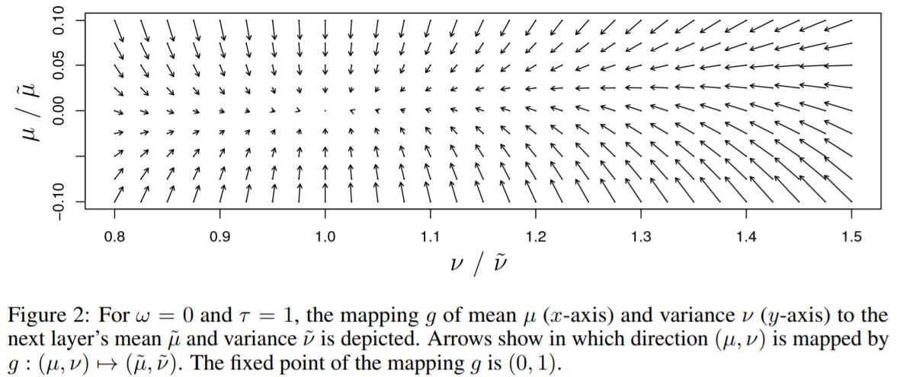
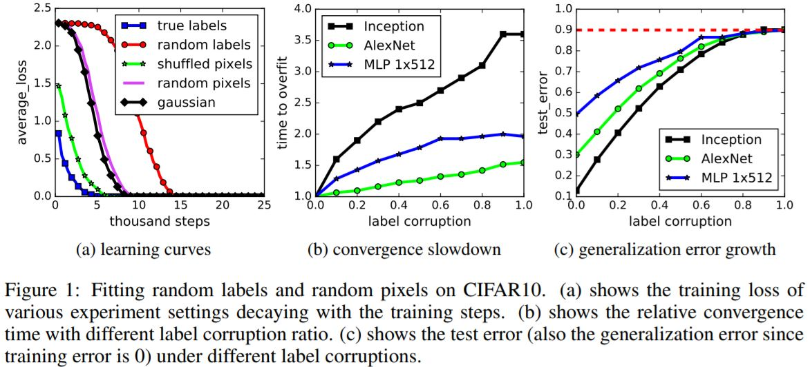
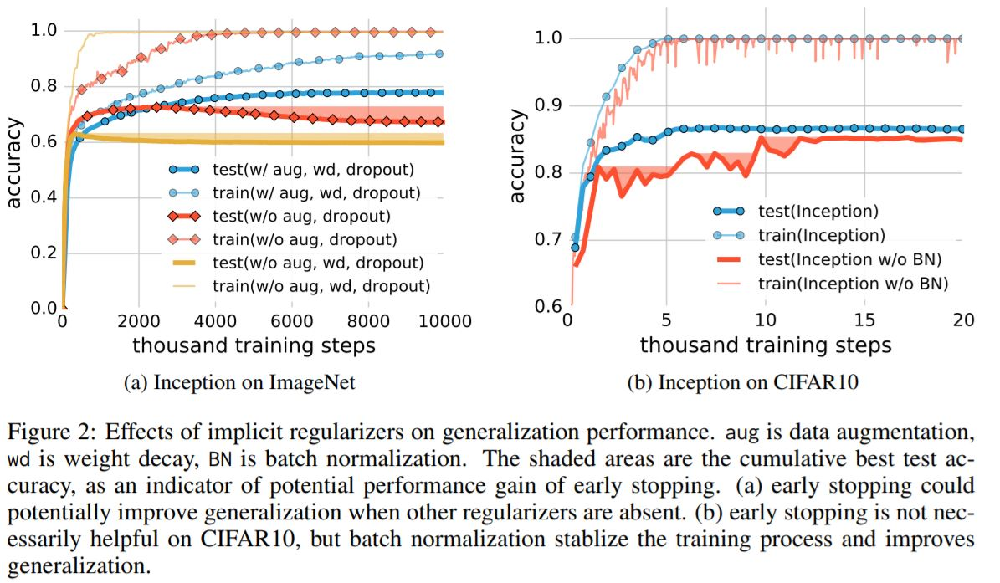

Deep Learning Architectures
Self-Normalizing Neural Networks
Günter Klambauer, Thomas Unterthiner, Andreas Mayr, Sepp Hochreiter : Sep 2017
Source
- Deep learning is setting new benchmarks everyday with the help of RNNs and CNNs.
- However, looking at problems that are not related to vision or sequential tasks, gradient boosting, random forests, or support vector machines are winning most of the competitions(Eg. Kaggle, HIGGS Challenge).
- With CNNs success, batch normalization and other stochastic regularization techniques has evolved into a standard.
- Both RNNs and CNNs can stabilize learning with weight sharing.
- However, this is not very useful with FNNs, and often leads to high variance.
- Self-Normalizing Neural Networks
- Definition 1 : *A neural network is self-normalizing if it possesses a mapping $g : \Omega \mapsto\Omega$ for each activation $y$ that maps mean and variance from one layer to the next and has a stable and attracting fixed point depending on $(\omega,\tau)$ in $\Omega$. Furthermore, the mean and the variance remain in the domain $\Omega$, that is $g(\Omega)\subseteq\Omega$, where $\Omega = {(\mu,\nu)|\mu\in[\mu_{min}, \mu{max}], \nu\in[\nu_{min}, \nu{max}]}$. When iteratively applying the mapping $g$, each point within $\Omega$ converges to this fixed point.*
- So, SNNs keep normalization of activations when propagating them through layers of the network.
- Constructing SNNs :
- The activation function, SELU
$$\text{selu}(x) = \lambda\begin{cases}x, & \text{if } x \ge 0 \
\alpha e^x - \alpha, & \text{if } x \leq 0 \end{cases}$$ - This activation allows to construct a mapping $g$ with properties that lead to SNNs. They cannot be derived with (scaled) ReLUs, sigmoid units, $tanh$ units and leaky ReLUs.
- For weight initialization $\omega=0$ and $\tau=1$ for all units in higher layer is proposed.

- The activation function, SELU
$$\text{selu}(x) = \lambda\begin{cases}x, & \text{if } x \ge 0 \
- New Dropout techniques are introduced.
- Benchmarks compared for UCI repository datasets, outperforming FNNs with and without normalization techniques, such as batch, layer and weight normalization or specialized architectures such as ResNets.
- Also proved that SNNs do not face vanishing and exploding gradients problem and therefore work well for architectures with many layers.
- The best performaing SNNs are typically very deep in contrast to other FNNs.
Understanding deep learning requires rethinking generalization
Chiyuan Zhang, Samy Bengio, Moritz Hardt, Benjamin Recht, Oriol Vinyals : Feb 2017
Source
- Neural networks have far more often trainable parameters than the number of samples they are trained on. Even then they exhibit small generalization errorr i.e. difference between “training error” and “test error”.
- Effective Capacity Of Neural Networks
- Randomization tests. Standard architectures were trained on a copy of data where the true labels were replaced by random labels.
- Deep neural networks easily fit random labels i.e. the they achieve 2 test error.
- The test error was of course no better than random chance as there was no correlation between the training and test labels.
- Also replacing the true images with random pixels(Gaussian noise), we observe that CNNs continue to fit the data with zero training error. 
- This has the following implications:
- The effective capacity of neural networks is sufficient for memorizing the entire dataset.
- Even optimization on random labels remains easy. In fact, training time increases only by a small constant factor compared with training on the true labels.
- Randomizing the labels is solely a data transformation, leaving all other properties of the learning problem unchanged.
- The role of regularization
- Explicit regularization may improve generalization performance, but is neither necessary not by itself sufficient for controlling generalization error.
- $l_2$ regularization sometimes even helps optimization, illustrating its poorly understoof nature in deep learning. 
- Finite sample expressivity
- Theorem 1. There exists a two-layer neural network with ReLU activations and $2n+d$ weights that can represent any function on a sample of size $n$ in $d$ dimensions.
- Implicit Regularization : An Appeal To Linear Models
- Arguments showing that it is not necessarily easy to understand the source of generalization for linear models either.
- Do all global minima generalize equally well? Is there a way to determine when one global minimum will generalize whereas another will not? In case of a linear model, even the curvature of the loss function would be the same.